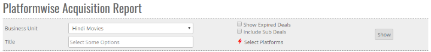
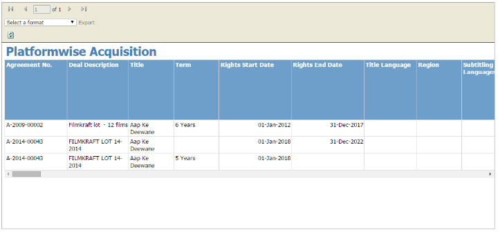


	<section>
		<article>
			<h2>Platformwise Acquisition<span></span></h2>
			<div>
				<p></p>

				<p>This report will be used by Syndication and Digital team as it will be most helpful for them in knowing which titles are acquired for what rights combination and based on that they can syndicated it.</p>

				<div class="triangle-border top">				
					
				</div>

				<p>To access this report click on "<b>Reports</b>"and then click on "<b>Platform wise exception Report</b>" </p>

				<p><b>Business Unit</b> - If there are multiple business unit, then as per selection of Business unit, respective data will be generated.</p>

				<p><b>Title</b> - User can select single or Multiple title and results will be based on title selection.</p> 

				<p><b>Platform:</b> Click on <b>select platform</b> user can select single or multiple Platform  </p>

				<p><b>Show Expired deals</b> - where user can select Expired deal by selecting check box, if user want to include deal with expired data.</p>

				<p><b>Include sub deals</b> - where user can select Include Sub deal by selecting check box, if user want to check platform of All Sub deals </p>
				
				<div class="triangle-border top">				
					
				</div>
			</div>
		</article>
	</section>